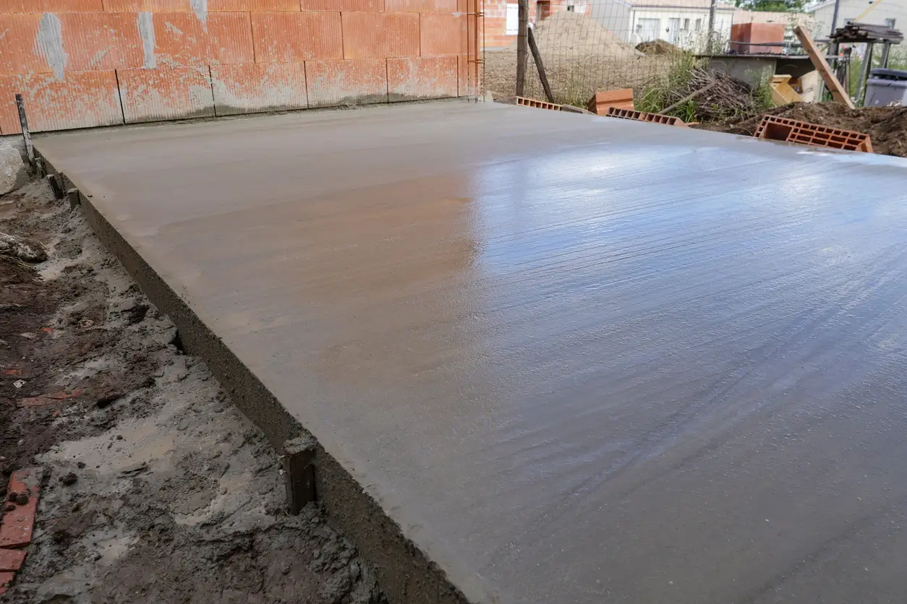
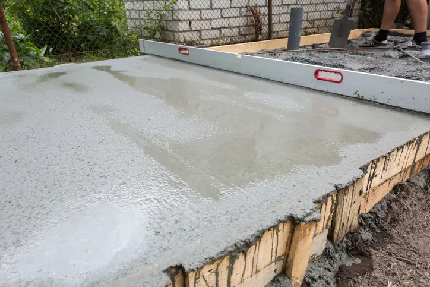

Replacing Old Bases For Slough Homeowners
A lot of the replacement jobs we carry out in Slough are for bases that were originally poured too thin, installed onto poor ground prep or have started cracking and moving over time.
Sometimes the building above starts leaning slightly, doors stop closing properly or the slab begins breaking away around the edges. In other cases the base simply was not level from the beginning.
When we replace a concrete base, we do not just pour fresh concrete over the top and hope for the best. The failed slab normally needs removing properly first so the new installation can sit on stable ground underneath.
For homeowners replacing an older shed or upgrading to a heavier summerhouse or garden office, we also regularly strengthen the new slab with thicker concrete, reinforcement mesh and improved sub-base preparation where needed.
What Usually Causes Concrete Bases To Fail
One of the biggest problems we see around Slough is movement caused by poor preparation underneath the slab. If the sub-base was not compacted properly originally, the concrete can eventually crack or sink in sections.
Sloped gardens also need careful cut and fill work before concrete is poured. If the levelling work underneath is rushed, pressure builds unevenly across the slab and movement starts appearing later.
We also replace a lot of bases on terraced properties and shared access gardens where the original installation was clearly rushed because material movement was awkward. We normally just plan these jobs differently from the start and keep the site organised so the replacement work stays controlled.
Typical issues we replace
- Cracked or split concrete slabs
- Bases sinking at one side
- Uneven surfaces affecting sheds or cabins above
- Thin concrete breaking around edges
- Water sitting against the structure after rain
- Old slabs installed without proper sub-base preparation
If you are still deciding between repair or full replacement, our main concrete shed base installation service explains more about how properly built foundations are normally prepared from the start.
Concrete Base Replacement Projects In Slough





How We Normally Handle Concrete Base Replacements
Every replacement job starts with assessing what caused the original slab to fail. There is no point replacing concrete if the ground issues underneath are still there.
We normally break out and remove the existing slab first, then rework the ground properly underneath. Depending on the site, this can involve fresh excavation, levelling work and compacted MOT sub-base installation before any new concrete goes down.
On sloped gardens around Slough, we often need to cut into higher sections and build lower sections back up gradually to create a stable level platform. That preparation stage matters just as much as the concrete itself.
Concrete is then supplied through local batching plants and poured once all formwork and levels are checked properly. For heavier structures we can also include reinforcement mesh and thicker slab depths where needed.
What the replacement process normally includes
- Breaking out and removing the failed slab
- Fresh excavation and levelling work
- Compacted sub-base installation
- Drainage and fall planning
- Edge formwork and reinforcement where required
- Clean concrete pour and finishing
A lot of long-term movement issues actually start underneath the slab itself. Our guide explaining what makes a concrete base structurally strong goes deeper into how proper preparation affects lifespan and stability.
Uneven Bases Eventually Affect The Structure Above
A badly replaced slab does not normally fail immediately. The problems usually show up gradually once the building starts settling onto uneven pressure points underneath.
We regularly see sheds twisting slightly at the corners, summerhouse doors catching, visible gaps appearing underneath wall sections and roofs no longer sitting square because the slab underneath has shifted over time.
Once a heavy garden building starts sitting unevenly, the structure above takes the strain. That is why we focus heavily on levelling, compacting and stabilising the ground before concrete is poured.
A lot of the failed slabs we replace were originally installed with shortcuts somewhere in the process. Usually either the excavation was shallow, the sub-base was weak or the concrete thickness was not suitable for the structure sitting above it.
If you have already noticed movement or cracking, leaving it too long normally just makes the replacement more involved later.
No Shortcuts On The Ground Preparation
- We remove failed slabs properly instead of covering problems up
- Levels are checked carefully before concrete is poured
- We handle awkward access and shared garden routes regularly
- Clean, organised installations carried out in real residential gardens
- Direct communication throughout the job without overcomplicating things
- Replacement bases built for long-term reliability, not temporary fixes
Experience normally shows in the finish and longevity of the slab. A properly prepared base simply stays more stable over time because the important groundwork underneath has been handled properly from the beginning.
Need A Concrete Base Replaced In Slough?
If your existing slab is cracked, sinking or no longer level, get in touch and we can advise on the best way to replace it properly before the structure above starts suffering further movement.